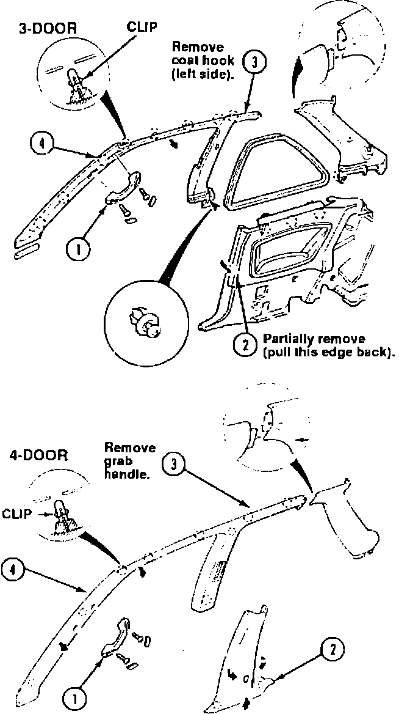
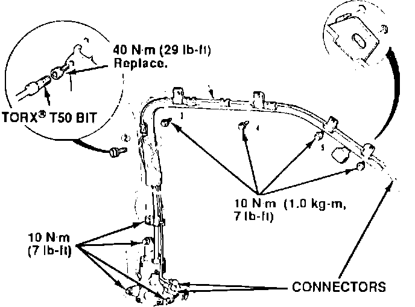
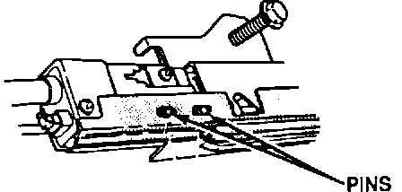
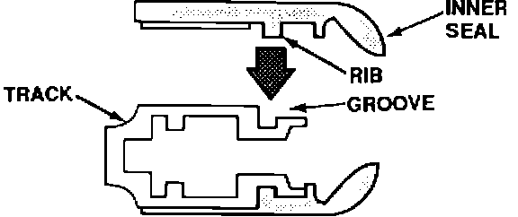
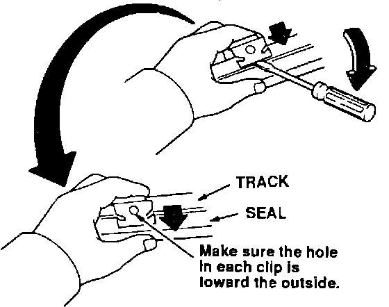
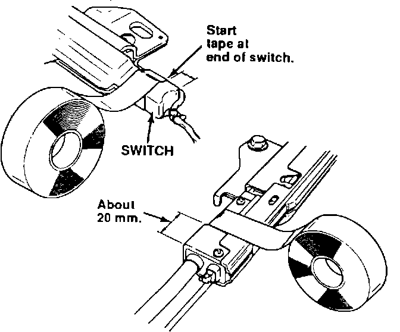
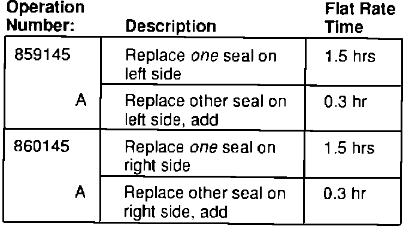

Torn Inner Seal On Seat Belt Track
BULLETIN NO.92-011
YEAR
1990-92
MODEL
INTEGRA
VIN APPLICATION
ALL
November 3, 1992
Torn Seal on Seat Belt Track (Supersedes 92-011, dated April 13, 1992)
PROBLEM
During seat belt operation, the inner seal on the track is torn by contact with the belt latch.
CORRECTIVE ACTION
Replace the torn inner seal. Replace the outer seal only if it is torn.

1. Remove the door opening trim in the sequence shown.
2. Remove the sun visor. There maybe a tapered shim under the headliner at the sun visor pivot. If so, note the direction of the taper, and position the shim the same way on reinstallation.

3. Disconnect the three connectors.
4. Remove the belt track. Pull the edge of the headliner down slightly and use a box-end wrench to remove the nine bolts.
5. Put the track on the workbench, and mark it with a pencil at the location of each seal clip. Then pry off the clips and pull off the damaged seal.
6. Apply 3-M General Purpose Adhesive Remover (P/N 051135-08984) to any tape left on the track. Follow the precautions on the remover container. Let the remover soak in for about 10 minutes, then scrape the old tape off.
7. Use a shop rag and more adhesive remover to wipe the track clean.
8. Inspect the inside of the track from end to end for rubber debris. If necessary, remove the debris from the inside of the track and from both ends.

9. Position the new seal on the track. The holes in the retractor end of an inner seal must fit over the pins on the track.

10. Peel the paper off the adhesive backing and press the seal down as you go; don't pull the seal or stretch it. Make sure the rib on the back of the seal fits into the groove in the track.

11. Reinstall the clips. Press each one onto the track as you pry up its inside edge with a screwdriver.

12. Tape both ends of the seal to the track with two turns of vinyl electrical tape. Don't let inner and outer seals overlap.
13. Reinstall the track and reconnect the connectors, then check seat belt operation.
14. If a seal on the other track is torn, repeat steps 1 through 13 on that side.
PARTS INFORMATION
3-DOOR P/N H/C
Seal, Right Inner 06814-SK7-A20 3809050
Right Outer 06818-SK7-A20 3809076
Left Inner 06824-SK7-A20 3809092
Left Outer 06828-SK7-A20 3809118
4-DOOR
Seal, Right Inner 06814-SK8-A20 3809068
Right Outer 06818-SK8-A20 3809084
Left Inner 06824-SK8-A20 3809100
Left Outer 06828-SK8-A20 3809126
WARRANTY CLAIM INFORMATION
In warranty:
The normal warranty applies.
Out of warranty:
Any repair performed after warranty expiration may be eligible for goodwill consideration by the District Service Manager. You must request consideration, and get the DSM's decision, before starting work.

Failed P/N:
Use applicable part number listed under PARTS INFORMATION.
Defect code: 021
Contention code: B99